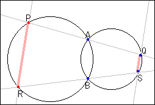

|
Two circles intersect at point A and B. Point P is on one circle, and point Q is on the other. Line PQ goes through point A. In the same way, point R is on one circle, and point S is on the other. Line RS goes through point B. What do you observe about the chords PR and QS. |
 |